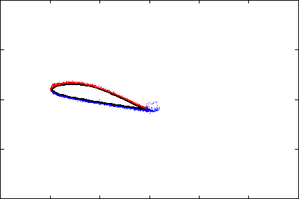
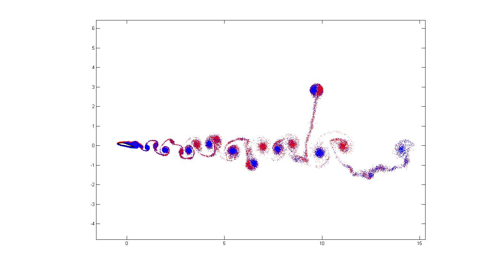

FX79w151a profile

Flow around the FX79w151a profile at 12 degrees angle with
Reynolds number Re = 5000. The picture below shows the overall
flow at a later time.
References
The numerical method employed in the simulations was described
in P. Deglaire, S. Engblom, O. Ågren, H. Bernhoff:
Analytical solutions for a single blade in vertical axis turbine
motion in two-dimensions, in Eur. J. Mech. B Fluids
28(4):506--520,
2009: (doi).
The fast multipole method was further detailed
in S. Engblom: On well-separated sets and fast multipole
methods, in Appl. Numer. Math. 61(10):1096--1102,
2011: (doi).

Stefan Engblom
Last modified: Fri Sep 6 14:57:56 CEST 2024